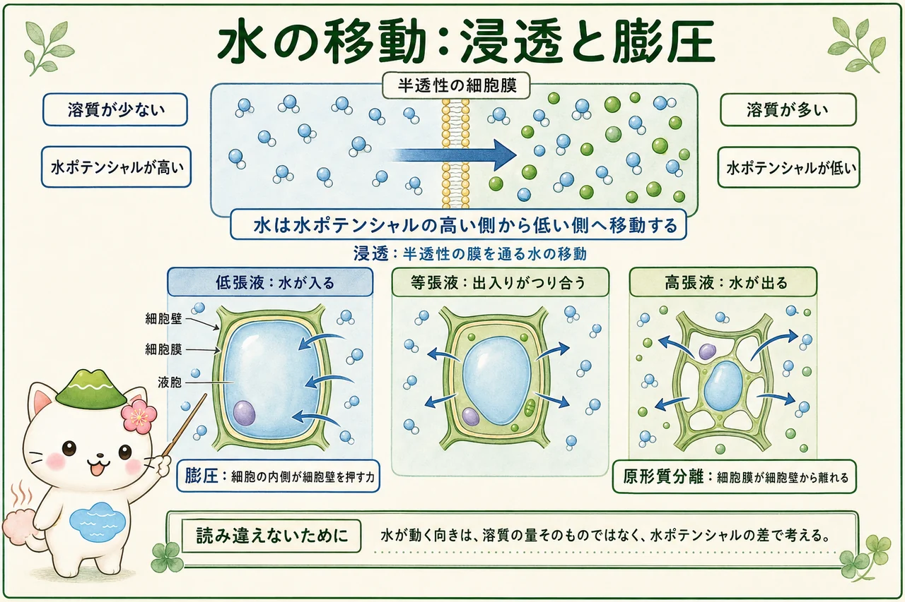

植物細胞らしさはどこにあるか
植物細胞も真核細胞なので、核、ミトコンドリア、小胞体、ゴルジ体などをもちます。そのうえで植物らしさを際立たせるのが、細胞の外を囲む細胞壁、細胞の大部分を占めることの多い中央液胞、そして光合成を行う葉緑体です。細胞壁の主成分はセルロースを含む網目状の構造で、細胞の形を支えます。細胞膜は細胞壁のすぐ内側にあり、こちらが物質の出入りを選ぶ境目です。
中央液胞は、液胞膜（トノプラスト）で囲まれた大きな区画です。水、イオン、有機酸、色素、不要になった物質などをため、細胞の水分状態にも関わります。葉緑体は光エネルギーを使って有機物をつくる場ですが、すべての植物細胞に同じ数だけあるわけではありません。たとえば根の地下部分の細胞は、ふつう光合成を主な役割にしません。細胞の役割に応じて、区画の大きさや働く遺伝子が変わります。

区画が反応を分ける
細胞の内部は、成分がただ混ざった袋ではありません。核はDNAを保ち、葉緑体では光合成、ミトコンドリアでは呼吸に関わる反応が進みます。小胞体とゴルジ体は、タンパク質や脂質をつくり、加工し、運ぶ経路の一部です。膜で区切ることで、同時に起きる反応を調節しやすくなり、必要な物質を必要な場所へ集められます。
この区画化は、細胞と外界の境にもあります。細胞壁は多くの水や小さな溶質が通り得る空間ですが、細胞膜は脂質二重層とタンパク質からでき、通す物質を選びます。「細胞壁があるから何も入らない」のではなく、どの膜を越えるかを考えることが、植物の吸水や輸送を理解する第一歩です。

細胞壁と細胞膜は似た言葉だけれど役目が違うよ。細胞壁は外側の丈夫な支え、細胞膜は「何を通すか」を細かく調節する境目。図を見るときは、二つの線を別々に追いかけてみよう。
細胞膜を通る物質の出入り
物質が膜を通る方法には、濃度差にしたがう拡散、水が主に動く浸透、膜タンパク質を通る促進拡散、そしてエネルギーを使って濃度差に逆らう能動輸送があります。二酸化炭素のような小さな非極性分子は脂質二重層を通りやすく、イオンや糖の多くは膜タンパク質の助けを必要とします。
根の細胞が無機イオンを取り込むときには、ATPを使ってイオンの偏りをつくる輸送が重要です。細胞膜の片側にイオンが集まると、水の動きにも影響します。つまり「水だけの話」と「養分だけの話」は分かれておらず、溶質の移動、膜タンパク質、エネルギーの利用がつながっています。
水ポテンシャル・浸透・膨圧
水の移動は、水ポテンシャル（記号 Ψ）で整理できます。水は水ポテンシャルが高い側から低い側へ正味で移動します。溶質が増えると水ポテンシャルは低くなりますが、植物細胞では細胞壁が押し返す力も大切です。基本的には、溶質による成分と圧力による成分を合わせて考えます。数値では水ポテンシャルが負になることも多いため、「高い」はゼロに近い側、「低い」はより負の側を意味します。
低張液に置かれた植物細胞では水が入り、液胞が広がって細胞の内側が細胞壁を押します。この押す力が膨圧で、草本の茎や葉の張りを支えます。高張液では水が出て、細胞膜と細胞質が細胞壁から離れる原形質分離が起こり得ます。等張に近い条件では正味の水の出入りが小さく、細胞は張りを失いやすくなります。細胞壁があるため、動物細胞のように無制限に膨らむわけではありません。

細胞から組織への経路
根から葉へ水や溶質が移るとき、細胞壁のすき間を通るアポプラスト経路と、細胞膜を越えて細胞質を通り、原形質連絡で隣へ渡るシンプラスト経路を区別すると見通しがよくなります。アポプラストは細胞壁と細胞間隙をつなぐ経路で、シンプラストは細胞質どうしをつなぐ経路です。
どちらの経路も、根が水とイオンを選んで取り込み、維管束へ渡す過程に関わります。特に細胞膜を一度越える場所では、輸送タンパク質による選択が働きます。細胞の小さな境目を理解すると、次に学ぶ根の吸水、道管の輸送、気孔からの蒸散を、一本の流れとして追えるようになります。
「濃いほうへ水が動く」とだけ覚えると、圧力が関わる場面で迷いやすいよ。大学植物学では、まず水ポテンシャルの高低を比べてから、溶質と圧力がその値をどう変えたのかを考えるのがおすすめ。
この冊子の要点
- 細胞壁は形を支え、細胞膜は物質の出入りを選びます。中央液胞と葉緑体は、植物細胞の働きを特徴づけます。
- 膜で区切られた区画は、光合成、呼吸、物質の加工・輸送などを分担します。
- 水は水ポテンシャルの高い側から低い側へ正味で動き、溶質と圧力の両方がその値に関わります。
- 低張液では膨圧が生じ得て、高張液では原形質分離が起こり得ます。細胞壁・細胞膜・液胞を分けて追うことが重要です。
- アポプラスト経路とシンプラスト経路は、細胞から根・維管束へと続く輸送を理解する手がかりです。
参照資料
- OpenStax Biology 2e：Eukaryotic Cells
- OpenStax Biology 2e：Passive Transport
- Taiz et al., Plant Physiology and Development, Oxford University Press.